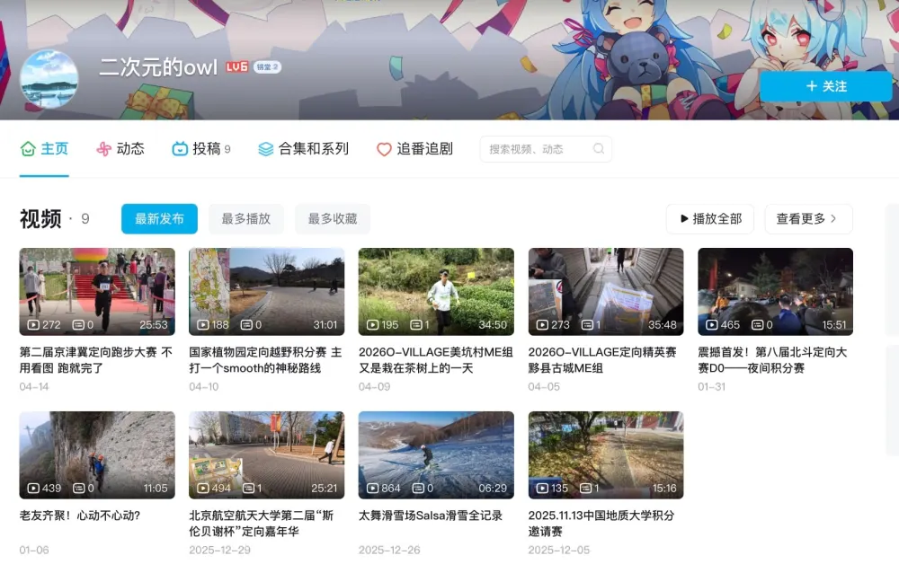

用身体记路，用速度写坐标。 Remembering routes by body, writing coordinates with speed.
每一次迈步都是对城市肌理的触摸，每一次加速都是在地图空白处落下自己的笔迹，让方向不再依赖导航，而是在呼吸、心跳与奔跑的节奏中，被身体一点点铭记。 Every step is a touch of the city's texture, every acceleration is a mark left on the map's blank space. Let direction no longer rely on navigation, but be remembered bit by bit within the rhythm of breathing, heartbeat, and running.

欢迎关注我的b站主页，我会在这里更新我的定向越野视频。 Welcome to follow my Bilibili homepage, where I will keep updating my orienteering videos.
最近参加过的赛事 Recent Races
- 2026.5.30-2026.5.31 2026.5.30-2026.5.31 2026江苏省定向锦标赛暨长三角定向邀请赛 2026 Jiangsu Orienteering Championship and Yangtze River Delta Orienteering Invitation Competition
- 2026.5.24 2026.5.24 我要上市运·北京排位赛第十八届北京市体育大会定向运动比赛第三站 朝阳金盏森林公园 "I Want to Go to the Games" Beijing Ranking Competition, 18th Beijing Sports Meet, Orienteering Event, Chaoyang Jinzhan Forest Park
- 2026.4.11-2026.4.12 2026.4.11-2026.4.12 第二届京津冀定向挑战赛 宝坻站 2nd Beijing-Tianjin-Hebei Orienteering Challenge, Baodi Station
准备参加的赛事 Upcoming Races
- 2026.6.6 2026.6.6 “我要上市运”丰台区专项训练 "I Want to Go to the Games" Fengtai District Special Training
- 2026.6.13-2026.6.14 2026.6.13-2026.6.14 我要上市运·北京排位赛第十八届北京市体育大会定向运动比赛第四站 延庆柳沟村 "I Want to Go to the Games" Beijing Ranking Competition, 18th Beijing Sports Meet, Orienteering Event, Yanqing Liugou Village
定向越野 Orienteering
定向越野把奔跑、读图、路线选择和临场判断压缩在同一段心跳里。比起单纯追速度，我更喜欢在陌生地形里找到最短、最稳、最聪明的路。 Orienteering compresses running, map reading, route choice, and on-the-spot judgment into one heartbeat. I love finding the shortest, cleanest, smartest way through unfamiliar terrain.
荣誉 Awards
- 2022年 湖北省定向运动锦标赛 2022 Hubei Orienteering Championship 定向团队赛第一名、男子团体第二名、短距离定向赛第五名 1st Team Orienteering, 2nd Men's Team, 5th Sprint Orienteering
- 2023年 湖北省定向运动锦标赛 2023 Hubei Orienteering Championship 全能奖第四名、成年团体第四名、中距离竞赛第四名、短距离竞赛第六名 4th All-Around, 4th Adult Team, 4th Middle Distance, 6th Sprint
- 2024年 湖北省定向、无线电测向运动锦标赛 2024 Hubei Orienteering and Radio Direction Finding Championship 精英组团体第二名 2nd Elite Team
- 2024年 湖北省大学生定向越野比赛暨第三届武汉市大学生定向越野比赛 2024 Hubei Collegiate Orienteering Championship and the 3rd Wuhan Collegiate Orienteering Championship 定向团队赛第一名、积分赛第四名、团体总分第四名 1st Team Orienteering, 4th Score-O, 4th Overall Team Score
- 2025年 首都高等学校第17届定向运动锦标赛 2025 17th Capital Universities Orienteering Championship 团队赛第三名、团体总分第一名 3rd Team Race, 1st Overall Team Score
- 2025年 “亮剑杯”军事定向运动比赛 2025 "Liangjian Cup" Military Orienteering Race 短距离第二名 2nd Sprint
- 2025年 世界定向排位赛·舟山定海站 2025 World Ranking Event, Zhoushan Dinghai 短距离第六名 6th Sprint
- 2026年 第二届京津冀定问挑战赛 宝抵站 2026 2nd Beijing-Tianjin-Hebei Orienteering Challenge, Baodi Station 短距离第四名 4th Sprint
田径 Track & Field
短跑练爆发，跳远练节奏，长跑练耐心。把每一次起跑、助跑和匀速巡航都记下来，PB和总里程会成为最诚实的时间轴。 Sprints build explosiveness, long jump builds rhythm, and distance running builds patience. Starts, approaches, and steady miles become the most honest timeline.
| 项目 Event | PB | 运动员等级 Athlete Grade | 创造时间 Date |
|---|---|---|---|
| 100m | 11.91s | 三级运动员 Level 3 Athlete | 2022.11.19 2022.11.19 |
| 200m | 25.45s | 三级运动员 Level 3 Athlete | 2023.11.04 2023.11.04 |
| 110mH | 20.60s | 2024.11.16 2024.11.16 | |
| 1000m | 3'14" | ||
| 3000m | 11'14" | ||
| 5000m | 21'24" | 2024.10.8 2024.10.8 | |
| 10000m | 46'26" | 2020.12.2 2020.12.2 | |
| 半程马拉松 Half Marathon | 1:49:14 | 2025.11.4 2025.11.4 | |
| 马拉松 Marathon | 4:11:59 | 2022.12.11 2022.12.11 | |
| 跳远 Long Jump | 5.42m | 2019.10.12 2019.10.12 |
多运动探索 Multi-Sport Exploration
以奔跑丈量街巷，以骑行延展边界，以攀登触摸高度，在不同运动的切换中不断发现身体的潜能与世界的新维度。 Running measures the streets, cycling extends the edge, and climbing reaches for height. Across different sports, I keep discovering what the body can learn and how the world can open up.
篮球 Basketball
节奏、空间和临场传球。 Tempo, spacing, and passing under pressure.
足球 Football
跑位、视野和长时间专注。 Off-ball movement, vision, and sustained focus.
羽毛球 Badminton
爆发、步法和瞬间判断。 Explosiveness, footwork, and split-second decisions.
乒乓球 Table Tennis
旋转、落点和极短反射链。 Spin, placement, and compact reflexes.
网球 Tennis
击球节奏、移动和底线耐心。 Stroke rhythm, movement, and baseline patience.
台球 Billiards
线路、力度和稳定出杆。 Angles, touch, and a steady cue stroke.
高尔夫 Golf
挥杆、距离感和身体稳定。 Swing mechanics, distance control, and body stability.
保龄球 Bowling
出手弧线、节奏和稳定重复。 Release angle, rhythm, and repeatable control.
滑雪 Skiing
重心、雪感和下坡节奏。 Balance, snow feel, and downhill rhythm.
滑冰 Ice Skating
重心、刃感和冰面上的流动。 Balance, edge control, and flow on ice.
游泳 Swimming
呼吸、核心和水里的节拍。 Breathing, core control, and rhythm in the water.
自行车 Cycling
巡航、爬坡和路线感。 Cruising, climbing, and route awareness.
攀岩 Rock Climbing
握力、路线判断和向上的耐心。 Grip strength, route reading, and upward patience.
赛车 Motorsport
线路、刹车点和速度感。 Racing lines, braking points, and speed sense.
本页运动数据来源于我的手表 Garmin Forerunner 245M，自 2020.10.5 起开始统计。 Sports data on this page is recorded with a Garmin Forerunner 245M, tracked since 2020.10.5.